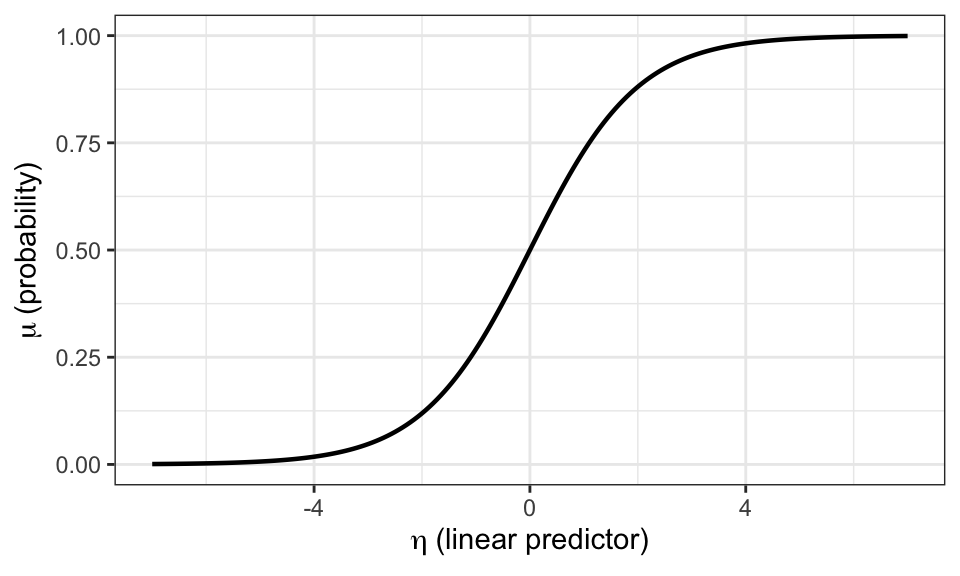
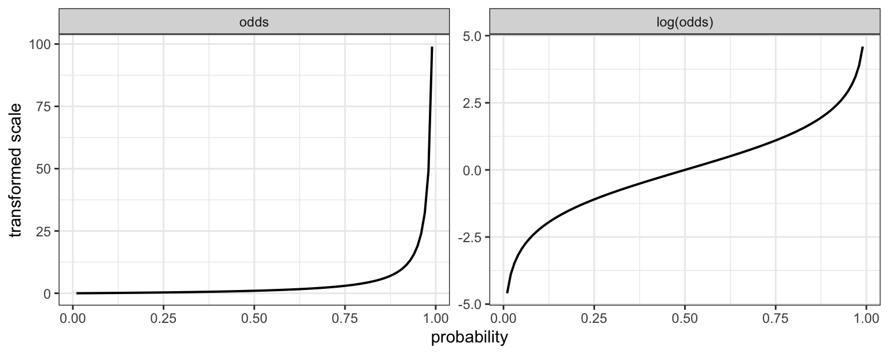
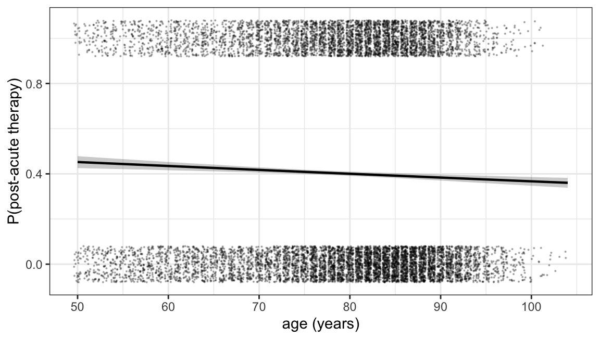
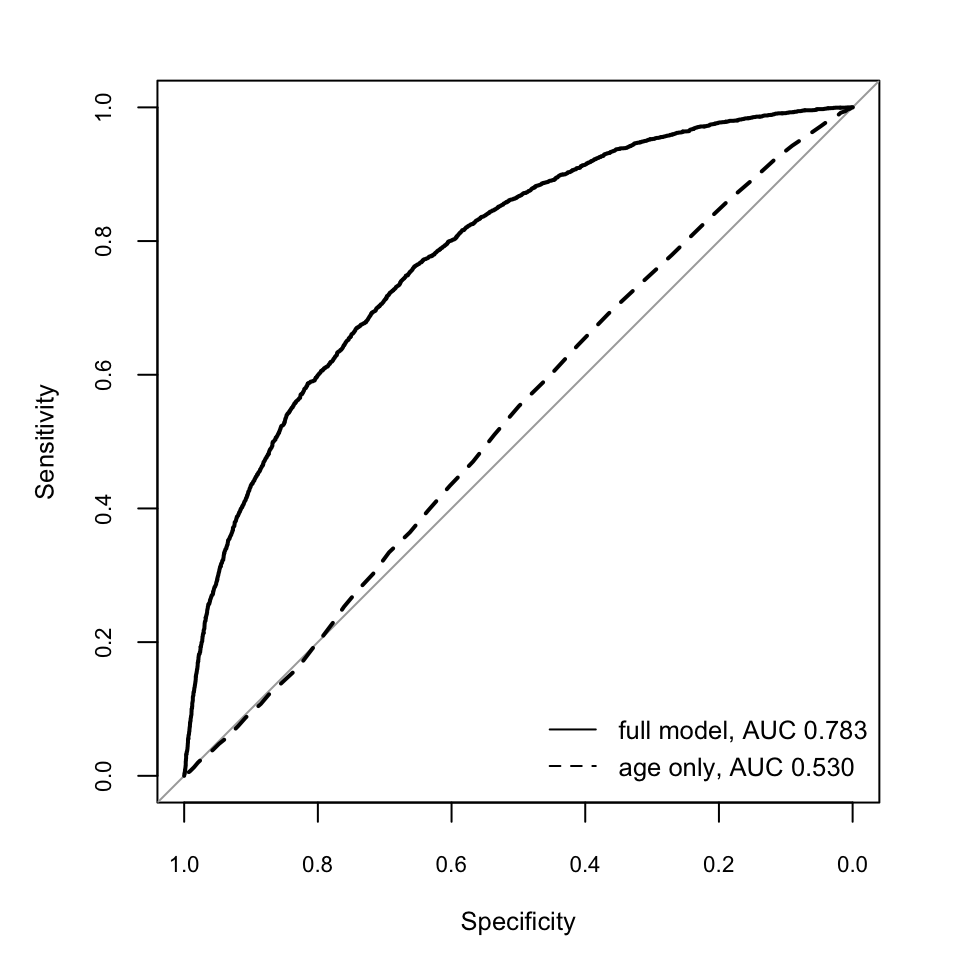
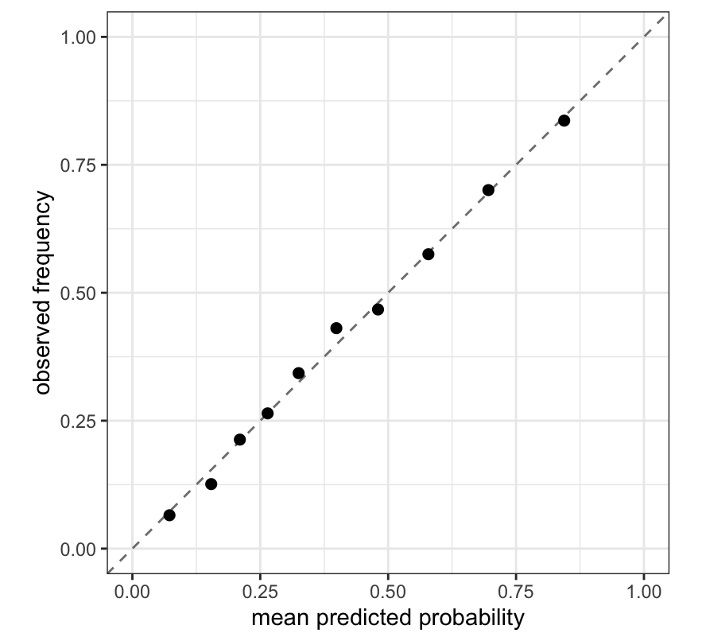

| Outcome | Family | Link | $g^{-1}(\eta)$ | What $\beta$ is |
|---|---|---|---|---|
| continuous, unbounded | `gaussian()` | identity | $\eta$ | difference in means (risk difference, for a 0/1 outcome) |
| binary event | `bernoulli()` | logit | $e^{\eta}/(1+e^{\eta})$ | log odds ratio |
| binary event | `bernoulli()` | log | $e^{\eta}$ | log risk ratio (rarely samples; see below) |
| count of events in $k$ trials | `binomial()` | logit | $e^{\eta}/(1+e^{\eta})$ | log odds ratio |
| count, or a 0/1 working model | `poisson()` | log | $e^{\eta}$ | log rate ratio, or log risk ratio |
| over-dispersed count | `negbinomial()` | log | $e^{\eta}$ | log rate ratio |
| proportion in $(0,1)$ | `Beta()` | logit | $e^{\eta}/(1+e^{\eta})$ | log odds ratio for the mean proportion |
| positive amount | `Gamma()` | log | $e^{\eta}$ | log ratio of means |
25 Generalised linear models and the scale of effects
Every regression so far in Part V has had a continuous outcome. In contrast, the master cohort’s actual question does asks whether a blood-pressure-lowering drug prevents stroke, which is a 0/1 event. This chapter takes up the binary outcome, and with it the family of models that handles outcomes that are counts, proportions and events rather than unbounded quantities: the generalised linear model.
Two of the changes are technical. The outcome is no longer normally distributed, so the likelihood changes; and its mean is confined to \([0, 1]\), so a linear predictor cannot be equated with the mean directly.
The third change is conceptual and is what the chapter is named for. With a continuous outcome there is only one natural way to express an effect: a difference of means, in the outcome’s own units. With a binary outcome there are at least three — a risk difference, a risk ratio and an odds ratio — and they are not restatements of one quantity. They can rank subgroups differently (Chapter 16), they behave differently under adjustment, and only some of them answer the question a decision-maker asks. A generalised linear model does not stand outside this choice: its link function commits it to one scale, and the coefficient it reports is a quantity on that scale. Choosing the link is therefore also a scientific decision, besides being a technical one.
25.1 The three parts of a generalised linear model
A GLM has three components, one of them new.
The random component is the stochastic data model, a.k.a. distribution assumed for the outcome given the predictors: normal, Bernoulli, binomial, Poisson, gamma, beta. These are the exponential-family distributions of Chapter 6, and membership in that family is what binds these into a single framework.
The systematic component is our old friend the detrministic process model, like the linear predictor,
\[\eta_i = \alpha + \beta_1 x_{i1} + \beta_2 x_{i2} + \dots + \beta_K x_{iK}\]
Everything that has been said about it applies: the adjustment set is read off a DAG and not chosen by model fit, a continuous confounder still needs a spline rather than a straight line, an interaction is still the default, and priors are still set on a scale that has to be reasoned about in the units of the predictor.
The link function \(g\) is the new part. A link function connects the expected value (the mean) of a response variable to a linear predictor, transforming the mean so that non-linear relationships and restricted data ranges (like probabilities between 0 and 1) can be modeled using linear methods.
Common Link Functions are (i) identity link which when used for normal data predicts the mean directly (μ = Xβ); (ii) Log link which when used for count data ensures counts stay positive (log(μ) = Xβ); (iii) Logit link which when used for binary data models the log-odds (\((log(\frac{p}{1-p}) = X\beta)\)).
In general the link function g maps a transformed mean onto an untransformed linear predictor:
\[g(\mu_i) = \eta_i, \qquad \mu_i = g^{-1}(\eta_i),\]
For a probability \(\mu \in (0,1)\) the logit \(\log\{\mu/(1-\mu)\}\) maps to the whole real line; for a positive rate the log does the same. Note that it is the model structure, not the data, that is transformed. This is why a GLM is not the same as regressing \(\log(y)\) on \(x\), and why zeroes in the outcome cause no difficulty.
Two rows of the table use the same family with different links, which makes the central point: the link is not dictated by the outcome type. A binary outcome can be modelled with a logit link, a log link, or an identity link. All three are generalised linear models for the same data; they differ in which effect measure their coefficients report and in what they assert about how covariate effects combine. The convention of calling the logit “canonical” for the Bernoulli records that it is the family’s natural parameter (Chapter 6), which is a statement about the algebra of the exponential family and about the convenience of maximum-likelihood estimation. It is not a statement that the odds ratio is the effect measure the question calls for.
What does not change
A GLM changes the likelihood and inserts a link. It changes nothing about causal identification. The adjustment set is still whatever the DAG says blocks the back-door paths (Chapter 11); a mediator is still ruinous to adjust for (Chapter 15); a collider is still ruinous to condition on (Chapter 11); and no choice of family or link converts an unidentified contrast into an identified one. Nor does it change the reporting convention: the effect is still obtained as a contrast of model predictions, standardised over the covariate distribution with marginaleffects, and not read off a coefficient. As will be seen, the non-identity link makes that convention matter more than it did in Chapter 20, where the coefficient and the marginal contrast happened to coincide.
The cohort is loaded as before. Its answer key is the set of true marginal contrasts computed from the potential-outcome risks.
df <- simulate_cohort(n = 50000, seed = 2024)
df$age_c <- (df$age - 62) / 10 # base assignment keeps the oracle attribute
o <- attr(df, "oracle")
truth <- cohort_truth(df)
c(E_Y0 = truth$E_Y0, E_Y1 = truth$E_Y1,
RD = truth$ATE_RD, RR = truth$ATE_RR, OR = truth$ATE_OR) E_Y0 E_Y1 RD RR OR
0.06810501 0.04086891 -0.02723611 0.60008660 0.58304615 Under no treatment 6.8% of the cohort would have a stroke and under universal treatment 4.1%. The same effect can be reported as a risk difference of -0.0272, a risk ratio of 0.600, or an odds ratio of 0.583. These are three descriptions of one intervention, and each of the three is a target a differently-linked model can be aimed at. The crude association points the other way, as it has since Chapter 4: among the treated 5.8% had a stroke against 3.5% of the untreated, because the patients who get the drug are the sicker ones.
25.2 A straight line for a probability
The simplest option is to ignore the boundedness and fit the model of Chapter 21 to the 0/1 outcome. This is the linear probability model: an identity link with a normal likelihood, so that
\[P(Y_i = 1 \mid X_i) = \alpha + \beta_1 x_{i1} + \dots + \beta_K x_{iK}.\]
Its coefficients are in probability units. \(\beta_1\) is the change in the probability of stroke per unit of \(x_1\), which for a binary treatment is a risk difference — the effect measure a clinical decision needs, arrived at without any back-transformation.
pri_lpm <- c(prior(normal(0.05, 0.10), class = "Intercept"),
prior(normal(0, 0.10), class = "b"),
prior(exponential(4), class = "sigma"))
m_lpm <- brm(stroke ~ drug + severity + age_c + diabetes,
family = gaussian(), data = df, prior = pri_lpm,
chains = 4, iter = 800, warmup = 400, seed = 1,
file = "models/ch24_lpm", file_refit = "on_change")rd_lpm <- avg_comparisons(m_lpm, variables = "drug")
fit_lpm <- fitted(m_lpm)[, "Estimate"]
c(RD = rd_lpm$estimate, lower = rd_lpm$conf.low, upper = rd_lpm$conf.high,
min_fitted = min(fit_lpm), max_fitted = max(fit_lpm),
pct_below_zero = 100 * mean(fit_lpm < 0)) RD lower upper min_fitted max_fitted
-0.02508295 -0.02954227 -0.02076687 -0.13119592 0.22924064
pct_below_zero
12.52400000 Two things are true at once. The standardised risk difference, -0.0251 with a credible interval of [-0.0295, -0.0208], is close to the true -0.0272. And 12.5% of the fitted values are negative probabilities, the lowest being -0.131. The model is internally incoherent about individuals while being roughly right about the population average.
That combination is characteristic and explains why the linear probability model survives in econometrics despite the obvious objection. What is being estimated is a weighted average of slopes of the true risk function, and if that function is not badly curved over the region the data occupy, the average is close to the average causal effect. What fails is everything that depends on the individual predictions: a predicted risk of -0.131 cannot be used for counselling a patient, cannot be calibrated, and cannot be extrapolated beyond the observed covariate range at all. The model also asserts, through its normal likelihood, a constant residual variance, which for a Bernoulli outcome is false by construction — the variance is \(\mu(1-\mu)\) and therefore depends on the predictors.
The reasonable use of the linear probability model is as a working model for a population-average risk difference in a setting where the risks are not near 0 or 1 and the covariates are few — for instance a randomised trial with a treatment indicator and little else. Outside that setting it is better to fit a model that respects the boundary and then to standardise it to the risk difference, which is what the rest of this chapter does.
25.3 Logistic regression
The second strategy keeps the linear predictor and bends it. We want the fitted probability to stay inside \((0,1)\) for every covariate pattern, including patterns far from the data. Many functions map the real line into the unit interval; the one used almost universally in regression is the logistic function.

The model is
\[P(Y_i = 1 \mid X_i) = \frac{\exp(\eta_i)}{1 + \exp(\eta_i)}, \qquad \eta_i = \alpha + \beta_1 x_{i1} + \dots + \beta_K x_{iK},\]
where \(\exp(a)\) denotes \(e^a\).1 Its inverse is the logit, which is the log of the odds:
\[\mathrm{logit}(\mu) = \log\!\left(\frac{\mu}{1-\mu}\right) = \log(\mu) - \log(1 - \mu) = \eta.\]
Describing the model as logistic-transformed or as logit-transformed makes no difference; they are the same model written from the two ends. On the logit scale the predictors combine additively, as in Chapter 21; on the probability scale the prediction is the S-shaped curve above. The odds \(\mu/(1-\mu)\) run from 0 to infinity as the probability runs from 0 to 1, and their logarithm runs over the whole real line, symmetrically about \(\mu = 0.5\).

A difference of two logits is the log of an odds ratio,
\[\log(\mathrm{OR}) = \mathrm{logit}(\mu_1) - \mathrm{logit}(\mu_0),\]
so a logistic coefficient exponentiates to an odds ratio. For a binary treatment in a two-by-two table with \(a\) treated cases, \(b\) treated non-cases, \(c\) untreated cases and \(d\) untreated non-cases, this is the familiar \(\mathrm{OR} = (a/b)/(c/d)\); a logistic regression generalises it to continuous predictors and to adjustment for covariates. Since the model asserts that logits add, \(\exp(\beta_1)\) is the odds ratio for a one-unit change in \(x_1\) at fixed values of every other predictor — a conditional odds ratio.
Fit it to the cohort with the adjustment set the DAG licenses.
pri_link <- c(prior(normal(-3, 1), class = "Intercept"),
prior(normal(0, 0.5), class = "b"))
m_logit <- brm(stroke ~ drug + severity + age_c + diabetes,
family = bernoulli(), data = df, prior = pri_link,
chains = 4, iter = 800, warmup = 400, seed = 1,
file = "models/ch24_logit", file_refit = "on_change")round(exp(fixef(m_logit)[, c("Estimate", "Q2.5", "Q97.5")]), 3) Estimate Q2.5 Q97.5
Intercept 0.036 0.034 0.039
drug 0.581 0.523 0.642
severity 2.064 1.966 2.164
age_c 1.202 1.150 1.255
diabetes 1.852 1.686 2.023The drug’s conditional odds ratio is 0.581. The true marginal odds ratio is 0.583. These are close but they are not estimates of the same thing, and the next section is about why.
25.4 The odds ratio is not collapsible
Consider a quantity that ought to be a property of the treatment alone: how much the drug changes the odds of stroke. Add to a correctly specified model a covariate that predicts the outcome but has no relation to the treatment whatsoever — under randomisation, every covariate is of this kind. Adding it cannot remove confounding, because there is none. It should therefore not change the estimated effect.
For the risk difference and the risk ratio it does not. For the odds ratio it does. To see this without any confounding at all, use the randomised variant of the cohort, in which treatment is assigned by a coin toss and severity, diabetes and prescribing preference play no part in it.
params_rct <- modifyList(default_params(),
list(d0 = 0, d_sev = 0, d_dm = 0, d_pref = 0))
collapse_grid <- function(n) {
d <- simulate_cohort(n = n, seed = 2024, params = params_rct)
d$age_c <- (d$age - 62) / 10
fams <- list(identity = gaussian(), log = poisson(), logit = binomial())
out <- lapply(names(fams), function(nm) {
fit_c <- glm(stroke ~ drug, family = fams[[nm]], data = d)
fit_a <- glm(stroke ~ drug + severity + age_c + diabetes,
family = fams[[nm]], data = d)
b_c <- unname(coef(fit_c)["drug"])
b_a <- unname(coef(fit_a)["drug"])
s_c <- summary(fit_c)$coefficients["drug", "Std. Error"]
tibble(n = n, link = nm, crude = b_c, adjusted = b_a,
gap = b_a - b_c, se = s_c, `gap/se` = abs(b_a - b_c) / s_c)
})
bind_rows(out)
}
grid <- bind_rows(collapse_grid(50000), collapse_grid(400000))| link | crude | adjusted | gap | se | gap/se |
|---|---|---|---|---|---|
| n = 50,000 | |||||
| identity | -0.0296 | -0.0296 | 0.0000 | 0.0021 | 0.0 |
| log | -0.5430 | -0.5497 | -0.0067 | 0.0393 | 0.2 |
| logit | -0.5743 | -0.6289 | -0.0545 | 0.0403 | 1.4 |
| n = 400,000 | |||||
| identity | -0.0277 | -0.0275 | 0.0002 | 0.0007 | 0.2 |
| log | -0.5173 | -0.5130 | 0.0043 | 0.0140 | 0.3 |
| logit | -0.5466 | -0.5866 | -0.0400 | 0.0144 | 2.8 |
Under the identity link the two coefficients agree to four decimal places. Under the log link they agree to within a fraction of a standard error. Under the logit link they do not: adjusting for outcome predictors that are unrelated to treatment moves the log odds ratio away from zero, and therefore the odds ratio away from 1. At n = 50,000 the gap is 0.0545, about 1.4 standard errors; at n = 400,000 the gap is of similar size but the standard error is a third as large, so it is now 2.8 standard errors. It is a systematic difference, not a fluctuation.
This is non-collapsibility.2 A measure of effect is collapsible if the population-average (marginal) value is a weighted average of the stratum-specific values. The risk difference and the risk ratio are; the odds ratio is not. Averaging risks across strata and then forming the odds ratio of the averages gives a number closer to 1 than the common within-stratum odds ratio, because the map from risk to odds is convex. Conditioning on a strong outcome predictor therefore reports a different estimand, not a less biased version of the same one.
Four consequences follow, and they are practical.
- A conditional odds ratio and a marginal odds ratio are different quantities. The logistic coefficient is the former. If the question is what would happen if the whole population were treated, the latter is wanted, and it must be obtained by standardisation.
- Two analyses of the same randomised trial, both correct, will report different odds ratios if they adjust for different covariates. Neither is biased.
- Odds ratios are not comparable across studies that adjusted for different things, which makes a meta-analysis of adjusted odds ratios an average over a set of distinct estimands.
- Attenuation of logistic coefficients when covariates are omitted — a much-discussed problem in the social sciences, where it is framed as an unobserved-heterogeneity rescaling of the latent variable — is the same phenomenon seen from the other side.3 The recommended remedy in that literature is now the one this book uses throughout: report average marginal effects or predicted probabilities rather than coefficients.4
That remedy works here. Standardising the logistic fit — predicting each patient’s risk under drug = 1 and under drug = 0, averaging, and contrasting — recovers marginal quantities on whatever scale is asked for.
tibble(
measure = c("risk difference", "risk ratio", "odds ratio"),
estimate = c(rd_logit$estimate,
avg_comparisons(m_logit, variables = "drug", comparison = "ratioavg")$estimate,
or_marg),
truth = c(truth$ATE_RD, truth$ATE_RR, truth$ATE_OR),
`logistic coefficient` = c(NA, NA, or_cond)
) |>
kbl(digits = 4, caption = "Marginal contrasts standardised from the logistic fit, against the answer key. The coefficient answers a different question from any of them.") |>
kable_styling(full_width = FALSE)| measure | estimate | truth | logistic coefficient |
|---|---|---|---|
| risk difference | -0.0253 | -0.0272 | |
| risk ratio | 0.6203 | 0.6001 | |
| odds ratio | 0.6040 | 0.5830 | 0.5814 |
The marginal odds ratio standardised from the fit is 0.604, nearer the true 0.583 than the conditional coefficient 0.581; the residual discrepancy is model misspecification, since the cohort’s true outcome mechanism is multiplicative in risk rather than in odds and involves a drug-by-blood-pressure interaction the model does not contain.
There is a dissenting position worth stating rather than suppressing. Some authors argue that the odds ratio should be preferred precisely because it is portable: an odds ratio transfers across populations with different baseline risks in a way a risk ratio cannot, since a risk ratio far from 1 is arithmetically impossible at high baseline risk. On that view non-collapsibility is a mathematical property to be understood rather than a defect, and the answer is to convert the odds ratio into a risk for reporting.5 The conversion step is the part both camps agree on, and it is what standardisation does. The disagreement is about which parameter to carry between studies, not about what to report to a reader.
25.5 Unmeasured causes of the outcome
The previous section added a measured covariate to the model. The situation that matters more in a causal analysis is the one in which a cause of the outcome is never measured at all. Let \(U\) be such a cause: it affects \(Y\), and it is independent of treatment, so it opens no back-door path and is not a confounder. The DAG says no adjustment for \(U\) is required, and none is possible. The question is whether the logistic model is nevertheless damaged by the \(U \rightarrow Y\) path in a way the identity-link model is not.
It is, and the size of the effect can be read off a simulation in which treatment is randomised and the true conditional log odds ratio is held fixed at 0.8 while the strength \(\gamma_U\) of the \(U \rightarrow Y\) path is varied.
n_uy <- 2e5
atten <- purrr::map_dfr(c(0, 0.5, 1, 1.5, 2, 3), function(gU) {
set.seed(100 + 10 * gU)
X <- rbinom(n_uy, 1, 0.5) # randomised treatment
U <- rnorm(n_uy) # unmeasured cause of Y only
Y <- rbinom(n_uy, 1, plogis(-1 + 0.8 * X + gU * U))
d <- data.frame(X, U, Y)
e0 <- -1 + gU * U # linear predictor under no treatment
r0 <- mean(plogis(e0)); r1 <- mean(plogis(e0 + 0.8))
tibble(`$\\gamma_U$` = gU,
`logit, $U$ omitted` = coef(glm(Y ~ X, family = binomial, data = d))["X"],
`logit, $U$ included` = coef(glm(Y ~ X + U, family = binomial, data = d))["X"],
`true marginal log OR` = log((r1 / (1 - r1)) / (r0 / (1 - r0))),
`identity, $U$ omitted` = coef(lm(Y ~ X, data = d))["X"],
`true marginal RD` = r1 - r0)
})| $\gamma_U$ | logit, $U$ omitted | logit, $U$ included | true marginal log OR | identity, $U$ omitted | true marginal RD |
|---|---|---|---|---|---|
| 0.0 | 0.7930 | 0.7930 | 0.8000 | 0.1797 | 0.1812 |
| 0.5 | 0.7562 | 0.8033 | 0.7584 | 0.1735 | 0.1735 |
| 1.0 | 0.6620 | 0.8002 | 0.6660 | 0.1542 | 0.1554 |
| 1.5 | 0.5741 | 0.7978 | 0.5697 | 0.1365 | 0.1354 |
| 2.0 | 0.4959 | 0.8177 | 0.4881 | 0.1193 | 0.1174 |
| 3.0 | 0.3763 | 0.8042 | 0.3702 | 0.0921 | 0.0906 |
Three readings of the same table. The logistic coefficient falls from 0.793 to 0.376, an attenuation of 53%, driven by a path that touches treatment nowhere. Including \(U\) recovers 0.8 in every row. And the identity-link coefficient agrees with the true marginal risk difference to three decimal places at every value of \(\gamma_U\).
Whether this is bias depends on what the coefficient is taken to estimate, and the two readings need to be kept apart.
- Read as the conditional log odds ratio — the effect of treatment on an individual, or within a stratum homogeneous in \(U\) — the coefficient is biased, by a factor that cannot be estimated from data lacking \(U\). This is the unobserved-heterogeneity rescaling of the previous section, now with no measured covariate available to remove it.
- Read as the marginal log odds ratio, it is not biased: the fitted value and the true marginal value agree in every row. It is a consistent estimate of a quantity that is a property of the population as much as of the treatment.
For a probit link the rescaling has a closed form. If the true model is \(\Phi^{-1}\{P(Y=1)\} = \alpha + \beta x + \gamma u\) with \(U\) normal, then marginalising over \(U\) gives \(P(Y = 1 \mid X) = \Phi\{(\alpha + \beta x) / \sqrt{1 + \gamma^2 \sigma_U^2}\}\), so every coefficient is divided by the same factor and the marginal model is still a probit. The logit has no equivalent identity: the mixture of logistic curves over a normal \(U\) is not itself logistic, though the discrepancy is small enough to be undetectable at the sample sizes used here.
Two practical consequences follow that the measured-covariate case does not make obvious.
- The change-in-estimate criterion for confounder selection is not valid under a logit link. The gap between a crude and an adjusted odds ratio is the sum of a confounding component and a non-collapsibility component, and the two can point in opposite directions, so the size of the shift carries no clean information about confounding. The decomposition is given analytically by Pang, Kaufman and Platt.6 Under an identity link the same shift is a confounding signal, because there is no second component.
- Adjustment in a nonlinear model therefore changes which effect is being estimated and not only how precisely it is estimated, which is the sense in which omitting prognostic covariates from a trial analysis has been described as changing the treatment effect under study.7
The table also bears on the portability argument recorded at the end of the previous section. Here the conditional odds ratio is the stable parameter and the marginal measures move with \(\gamma_U\) — but that is true by construction, because the simulation generates the data on the logit scale. Had the mechanism been additive in risk, the conditional risk difference would have been the stable parameter instead. The simulation shows that marginal measures depend on the amount of unmeasured outcome variation in the population; it does not adjudicate which conditional measure is the portable one.
25.5.1 Standardisation is not damaged by the same paths
If omitting \(U\) attenuates the coefficient, it might be expected to corrupt the standardised marginal contrast as well, since a logistic model with \(U\) omitted is not itself a logistic model and g-computation from it inherits that misspecification. It does not, in any of four scenarios: a normal \(U\); a bimodal \(U\), representing an unmeasured high-risk subgroup; a \(U\) that modifies the effect of treatment on the logit scale; and a high baseline risk. Because the residual errors are small, each scenario is run ten times so that they can be compared with Monte Carlo variation rather than eyeballed.
Show code
std_rd <- function(fit, d) { # g-computation risk difference
d1 <- d; d1$X <- 1; d0 <- d; d0$X <- 0
mean(predict(fit, newdata = d1, type = "response")) -
mean(predict(fit, newdata = d0, type = "response"))
}
scen <- list(`normal U` = list(Ud = "normal", bXU = 0, int = -1),
`bimodal U` = list(Ud = "bimodal", bXU = 0, int = -1),
`U modifies the X effect` = list(Ud = "normal", bXU = 0.8, int = -1),
`high baseline risk` = list(Ud = "normal", bXU = 0, int = 0.6))
reps <- purrr::map_dfr(names(scen), function(nm) {
s <- scen[[nm]]
purrr::map_dfr(1:10, function(r) {
set.seed(1000 * match(nm, names(scen)) + r)
X <- rbinom(n_uy, 1, 0.5)
L <- rnorm(n_uy) # a measured prognostic covariate
U <- if (s$Ud == "normal") rnorm(n_uy) else
ifelse(rbinom(n_uy, 1, 0.3) == 1, 2, -0.857)
e0 <- s$int + 1.0 * L + 1.5 * U
e1 <- e0 + 0.8 + s$bXU * U
Y <- rbinom(n_uy, 1, plogis(ifelse(X == 1, e1, e0)))
d <- data.frame(X, L, Y)
tibble(scenario = nm, truth = mean(plogis(e1)) - mean(plogis(e0)),
logit = std_rd(glm(Y ~ X + L, family = binomial, data = d), d),
probit = std_rd(glm(Y ~ X + L, family = binomial("probit"), data = d), d),
identity = std_rd(glm(Y ~ X + L, family = gaussian, data = d), d))
})
})| scenario | identity: mean error (%) | logit: mean error (%) | probit: mean error (%) | identity: Monte Carlo SD (%) | logit: Monte Carlo SD (%) | probit: Monte Carlo SD (%) |
|---|---|---|---|---|---|---|
| U modifies the X effect | -0.34 | -0.32 | 0.16 | 1.37 | 1.40 | 1.38 |
| bimodal U | 1.52 | 1.55 | 1.38 | 2.17 | 2.15 | 2.16 |
| high baseline risk | 0.02 | 0.04 | -0.01 | 1.68 | 1.74 | 1.73 |
| normal U | -0.36 | -0.35 | -0.37 | 1.81 | 1.81 | 1.79 |
Every mean error is smaller than the Monte Carlo standard deviation of a single replicate, and — the more informative comparison — the errors are almost identical across the three links within each scenario. Whatever residual discrepancy there is, it is not attributable to the link.
The conclusion is narrower than “the logistic model is biased by unmeasured causes of the outcome”, and it is more useful. The \(U \rightarrow Y\) path damages the coefficient, severely, and damages it in a way that has no counterpart under an identity link. It does not measurably damage the standardised marginal contrast obtained from the same fit. The threat is to reading coefficients, which is the practice this book avoids throughout, and not to the model’s capacity to deliver a causal estimand.
25.6 The log link and the risk ratio
If the risk ratio is the quantity wanted, a model can report it directly by using a log link, under which
\[\log \mu_i = \eta_i, \qquad \mu_i = \exp(\eta_i),\]
so that \(\exp(\beta_1)\) is a risk ratio rather than an odds ratio. The obvious implementation, a Bernoulli likelihood with a log link, is badly behaved: it requires \(\exp(\eta_i) \le 1\) for every row, and enforcing that constraint makes the posterior geometry pathological — divergent transitions, failed initialisation — in a way no choice of prior repairs. The same difficulty appears in maximum-likelihood log-binomial regression as a failure to converge.8
The standard evasion is to fit a Poisson likelihood with a log link to the 0/1 outcome. The Poisson has no ceiling at 1, so it samples without difficulty, and its log-link coefficient is a log risk ratio. Because the Poisson variance assumption is wrong for a binary outcome — it assumes variance equal to the mean, where the truth is \(\mu(1-\mu)\), which is smaller — the intervals come out conservative rather than anti-conservative. In the frequentist literature this is the modified Poisson estimator, ordinarily paired with a robust variance estimator to correct the interval width.9 Its Bayesian counterpart is simply family = poisson() on the 0/1 outcome; the model is a working model for the mean and is treated as such.
m_pois <- brm(stroke ~ drug + severity + age_c + diabetes,
family = poisson(), data = df, prior = pri_link,
chains = 4, iter = 800, warmup = 400, seed = 1,
file = "models/ch24_pois", file_refit = "on_change")round(exp(fixef(m_pois)[, c("Estimate", "Q2.5", "Q97.5")]), 3) Estimate Q2.5 Q97.5
Intercept 0.035 0.032 0.038
drug 0.618 0.561 0.685
severity 1.914 1.833 1.996
age_c 1.181 1.132 1.229
diabetes 1.749 1.612 1.916The conditional risk ratio is 0.618 and the standardised marginal risk ratio is 0.618. They agree, which is what collapsibility of the risk ratio means: with a log link and no interaction terms, the model asserts a constant risk ratio across covariate patterns, and the average of constant ratios is that ratio. The conditional and marginal quantities part company only when the model contains an interaction, in which case the constant-ratio assertion has been dropped deliberately.
The poisson() fit is also the model used for the cohort in Chapter 15, which is why the mediation results there are on the risk-ratio scale.
25.7 Counts and rates
The Poisson family earns its place in the framework on genuine counts, where the outcome is the number of events and the natural effect measure is a rate ratio. Two features of count data have no analogue in the models so far: the events accrue over an amount of exposure that differs between units, and the Poisson’s single-parameter variance is often too small for real data.
Take a small simulation with a known answer: an infection-control protocol is introduced on some wards, patients are followed for differing lengths of time, and the true rate ratio is 0.65.
set.seed(11)
n_pat <- 3000
protocol <- rbinom(n_pat, 1, 0.5)
# wards on the new protocol keep patients under observation longer
pt <- pmax(round(rgamma(n_pat, shape = 4,
rate = ifelse(protocol == 1, 1.0, 1.6)), 2), 0.2)
rate0 <- 1.2 # infections per patient-year, old protocol
true_rr <- 0.65
events <- rpois(n_pat, rate0 * ifelse(protocol == 1, true_rr, 1) * pt)
ward <- data.frame(events, protocol, pt)
c(mean_person_years_old = mean(pt[protocol == 0]),
mean_person_years_new = mean(pt[protocol == 1]),
mean_events_old = mean(events[protocol == 0]),
mean_events_new = mean(events[protocol == 1]))mean_person_years_old mean_person_years_new mean_events_old
2.486177 3.999443 3.010731
mean_events_new
3.095427 The two arms record almost the same number of infections, because the protocol wards observe each patient for longer. A model of counts alone therefore finds nothing. What the question asks about is the number of events per unit of observation time, and that is expressed by an offset: a term in the linear predictor whose coefficient is fixed at 1, so that
\[\log \mathbb{E}[Y_i] = \log(t_i) + \alpha + \beta\,x_i \quad\Longleftrightarrow\quad \log\!\left(\frac{\mathbb{E}[Y_i]}{t_i}\right) = \alpha + \beta\,x_i,\]
which is to say that the model is a model of the rate \(\mathbb{E}[Y_i]/t_i\) while the likelihood remains a likelihood for the count.
m_rate <- glm(events ~ protocol + offset(log(pt)), family = poisson(), data = ward)
m_norate <- glm(events ~ protocol, family = poisson(), data = ward)
c(true_rate_ratio = true_rr,
with_offset = unname(exp(coef(m_rate)["protocol"])),
without_offset = unname(exp(coef(m_norate)["protocol"])),
baseline_rate = unname(exp(coef(m_rate)[1])),
dispersion = m_rate$deviance / m_rate$df.residual)true_rate_ratio with_offset without_offset baseline_rate dispersion
0.6500000 0.6391182 1.0281315 1.2109882 1.0970083 With the offset the estimate is 0.639 against a true 0.65. Without it the estimate is 1.028 — no effect at all, because it is a ratio of counts and the counts were accumulated over unequal periods. In brms the same term is written events ~ protocol + offset(log(pt)) in the formula. Unequal follow-up is the rule rather than the exception in cohort studies, and omitting the offset is a way of getting the estimand wrong that no amount of adjustment repairs.
The logarithm in that offset is forced rather than conventional. What an offset asserts is that expected events are proportional to exposure, which is a multiplicative statement, while the linear predictor is additive; the logarithm is the function that converts the one into the other. For a general link \(g\), writing \(g(\mathbb{E}[Y_i]) = g(t_i) + \eta_i\) gives \(\mathbb{E}[Y_i] = g^{-1}\{g(t_i) + \eta_i\}\), and only for \(g = \log\) is the result proportional to \(t_i\). An additive offset can express proportionality to exposure only under a log link.
Using \(t_i\) itself is therefore not a mild misspecification. It asserts \(\mathbb{E}[Y_i] = e^{t_i} e^{\eta_i}\), so that extending observation from two years to four multiplies the expected count by \(e^2 \approx 7.4\) rather than by 2.
m_bad <- glm(events ~ protocol + offset(pt), family = poisson(), data = ward)
m_free <- glm(events ~ protocol + log(pt), family = poisson(), data = ward)
m_add <- glm(events ~ 0 + pt + pt:protocol,
family = poisson(link = "identity"), data = ward)
c(offset_log_t = unname(exp(coef(m_rate)["protocol"])),
offset_t = unname(exp(coef(m_bad)["protocol"])),
gamma_free = unname(coef(m_free)["log(pt)"]),
rate_difference = unname(coef(m_add)["pt:protocol"])) offset_log_t offset_t gamma_free rate_difference
0.63911818 0.02560883 0.99738074 -0.43702362 The wrong offset returns 0.026 against the true 0.65 — worse than leaving the offset out altogether, because follow-up is longer in the protocol arm, so the error is confounded with the exposure.
Two variants are worth knowing. The first releases the coefficient on \(\log t\) rather than fixing it at 1, fitting \(\mathbb{E}[Y_i] \propto t_i^{\gamma}\); the offset is the restriction \(\gamma = 1\), and estimating \(\gamma\) instead is a check on it. Here \(\hat\gamma\) = 0.997 with a 95% interval of [0.954, 1.041], as it should be, since the simulation generated counts proportional to time. Read a departure from 1 with care: with recurrent events and unmeasured heterogeneity, \(\hat\gamma\) below 1 is produced by frailty and by depletion of susceptibles rather than by a genuinely non-constant rate. Where the rate does vary over follow-up, the standard remedy is not a different offset but finer rows — split each patient’s time into intervals, each with its own \(\log t\) offset and its own baseline, which is Poisson regression used as a piecewise-exponential survival model.
The second variant makes the link the explicit choice. Drop the offset and let exposure multiply the whole linear predictor, \(\mathbb{E}[Y_i] = t_i(\alpha + \beta x_i)\): this is an identity-link model, and its coefficient is a rate difference of -0.437 events per person-year against a true \(1.2 \times 0.65 - 1.2 = -0.42\), rather than a rate ratio. Nothing about counts requires the multiplicative scale. The form of the offset and the effect measure the model reports are one decision and not two, which is the subject of the next section. One practical restriction: \(\log 0\) is undefined, so rows with zero exposure have to be dropped, and they carry no information anyway because their expected count is zero whatever the rate.
The second feature is over-dispersion. The Poisson distribution has one parameter, and its variance is forced equal to its mean; if unmeasured heterogeneity between units inflates the variance, the point estimate is still reasonable but the intervals are too narrow. We repeat the simulation with ward-level frailty.
set.seed(12)
frailty <- rgamma(n_pat, shape = 0.8, rate = 0.8) # mean 1
ward2 <- ward
ward2$events <- rpois(n_pat, rate0 * ifelse(protocol == 1, true_rr, 1) * pt * frailty)
m_p <- glm(events ~ protocol + offset(log(pt)), family = poisson(), data = ward2)
m_nb <- MASS::glm.nb(events ~ protocol + offset(log(pt)), data = ward2)
tibble(
model = c("Poisson", "negative binomial"),
`rate ratio` = c(exp(coef(m_p)["protocol"]), exp(coef(m_nb)["protocol"])),
`SE(log RR)` = c(summary(m_p)$coefficients["protocol", "Std. Error"],
summary(m_nb)$coefficients["protocol", "Std. Error"])
) |>
kbl(digits = 3, caption = "Over-dispersed counts, mean 3.1 and variance 21.9. The two models agree on the effect and disagree by a factor of more than two on how well it is determined.") |>
kable_styling(full_width = FALSE)| model | rate ratio | SE(log RR) |
|---|---|---|
| Poisson | 0.680 | 0.021 |
| negative binomial | 0.671 | 0.048 |
The residual deviance per degree of freedom is 4.20, where a well-fitting Poisson gives about 1. The two point estimates are almost identical; the standard errors differ by a factor of 2.3. Over-dispersion is a statement about precision, not about bias, and the remedy is a likelihood with a second parameter: the negative binomial, which is a gamma mixture of Poissons (Chapter 6) and in brms is family = negbinomial(). A posterior predictive check of the count distribution is the diagnostic that finds this, which is the general instruction of Chapter 22 applied to a family whose variance is not free.
25.8 One model, three effect measures
Because effects are obtained as contrasts of predictions rather than read off coefficients, one fitted model can report all three measures. The scale of the report and the scale of the link come apart.
scale_row <- function(label, cmp, back = identity) {
a <- avg_comparisons(m_pois, variables = "drug", comparison = cmp)
tibble(measure = label, estimate = back(a$estimate),
lower = back(a$conf.low), upper = back(a$conf.high))
}
bind_rows(
scale_row("risk difference", "difference"),
scale_row("risk ratio", "ratioavg"),
scale_row("odds ratio", "lnoravg", exp)
) |>
mutate(truth = c(truth$ATE_RD, truth$ATE_RR, truth$ATE_OR)) |>
kbl(digits = 4, caption = "Three effect measures from one log-link fit, each with its posterior interval, against the answer key.") |>
kable_styling(full_width = FALSE)| measure | estimate | lower | upper | truth |
|---|---|---|---|---|
| risk difference | -0.0257 | -0.0320 | -0.0198 | -0.0272 |
| risk ratio | 0.6178 | 0.5611 | 0.6851 | 0.6001 |
| odds ratio | 0.6011 | 0.5428 | 0.6710 | 0.5830 |
Note that the ratio measures use the ratioavg and lnoravg comparisons, which form the ratio of the averaged risks. The average of the individual ratios is a different number and is not the marginal risk ratio.10
Which should be reported? The measures answer different questions.
The risk difference is what a decision needs, because it is the only one that carries information about how much disease there is to prevent. Its reciprocal is the number needed to treat: here 39 patients treated to avert one stroke, with the posterior interval 31 to 51.11 A risk ratio of 0.62 is the same whether it halves a risk of 40% or a risk of 0.004%, and only in the first case is it worth acting on.
The risk ratio is the measure that transports best between populations with different baseline risks, and is the usual choice when an effect estimated in one population is to be applied to another. It is also the scale on which biological mechanisms are often closest to additive, which is why it is the default for the outcome models in this book.
The odds ratio is required when the design forces it — most importantly in a case-control study, where risks are not estimable and the odds ratio is — and is otherwise best treated as an intermediate quantity to be converted before reporting. Reporting it as though it were a risk ratio overstates the effect, increasingly so as the outcome becomes common.
25.9 Probit, and the choice of link
The logit is not the only function that maps the real line into \((0,1)\). The probit link uses the normal distribution function, \(\Phi^{-1}(\mu) = \eta\), and arises naturally wherever the binary outcome is conceived as a threshold crossing by an underlying normal quantity — the liability-threshold models of quantitative genetics, item-response models, signal-detection theory. The complementary log-log link, \(\log\{-\log(1 - \mu)\} = \eta\), is asymmetric about \(\mu = 0.5\) and corresponds to a proportional-hazards model for grouped survival data. Both are available in brms as bernoulli(link = "probit") and bernoulli(link = "cloglog").
How much does the choice matter? Fit all three to data generated on the logit scale.
set.seed(7)
n_lk <- 4e5
L_lk <- rnorm(n_lk, 0, 1.5); X_lk <- rbinom(n_lk, 1, 0.5)
Y_lk <- rbinom(n_lk, 1, plogis(-1.5 + 0.8 * X_lk + 1.2 * L_lk))
d_lk <- data.frame(X = X_lk, L = L_lk, Y = Y_lk)
f_logit <- glm(Y ~ X + L, family = binomial, data = d_lk)
f_probit <- glm(Y ~ X + L, family = binomial("probit"), data = d_lk)
f_cloglog <- glm(Y ~ X + L, family = binomial("cloglog"), data = d_lk)
e0_lk <- -1.5 + 1.2 * L_lk
truth_lk <- mean(plogis(e0_lk + 0.8)) - mean(plogis(e0_lk))
p_logit <- predict(f_logit, type = "response")
p_probit <- predict(f_probit, type = "response")
c(coef_ratio_X = coef(f_logit)["X"] / coef(f_probit)["X"],
pi_over_sqrt3 = pi / sqrt(3),
max_abs_diff_p = max(abs(p_logit - p_probit)),
AIC_logit = AIC(f_logit), AIC_probit = AIC(f_probit),
AIC_cloglog = AIC(f_cloglog))coef_ratio_X.X pi_over_sqrt3 max_abs_diff_p AIC_logit AIC_probit
1.737469e+00 1.813799e+00 1.472996e-02 3.525993e+05 3.529845e+05
AIC_cloglog
3.558415e+05 | link | standardised RD | truth | error (%) |
|---|---|---|---|
| logit | 0.1164 | 0.1156 | 0.7033 |
| probit | 0.1161 | 0.1156 | 0.4611 |
| cloglog | 0.1118 | 0.1156 | -3.2396 |
Logit and probit coefficients differ by a factor of about 1.74, close to but below the asymptotic \(\pi/\sqrt{3} = 1.814\). The largest discrepancy between their fitted probabilities anywhere in 400,000 observations is 0.0147. The standardised risk differences agree with each other and with the answer key to within a fraction of a percentage point. The likelihood does distinguish the links — the AIC difference is 385 in favour of the generating link — so the two are not unidentifiable; the point is that the distinction does not propagate to anything worth reporting. The complementary log-log link is the visible outlier, because its asymmetry is a genuine commitment about functional form rather than a reparameterisation.
One property does separate logit from probit decisively, and it is the one the previous section referred to when it said a case-control design forces the odds ratio. Under outcome-dependent sampling — retaining every case and a fraction of the controls — only the intercept of a logistic model is altered; the slopes are unchanged. No other link has this property. Because a case-control subsample is much smaller than the cohort, the sampling is repeated 25 times so that a shift can be distinguished from subsample noise.
Show code
cc <- purrr::map_dfr(1:25, function(r) {
set.seed(500 + r)
keep <- d_lk$Y == 1 | (d_lk$Y == 0 & runif(n_lk) < 0.05) # all cases, 5% of controls
dcc <- d_lk[keep, ]
gl <- glm(Y ~ X + L, family = binomial, data = dcc)
gp <- glm(Y ~ X + L, family = binomial("probit"), data = dcc)
tibble(logit_X = coef(gl)["X"], logit_L = coef(gl)["L"],
probit_X = coef(gp)["X"], probit_L = coef(gp)["L"])
})
cc_tab <- tibble(
link = c("logit", "probit"),
`cohort $x$` = c(coef(f_logit)["X"], coef(f_probit)["X"]),
`case-control $x$, mean over 25 samples` = c(mean(cc$logit_X), mean(cc$probit_X)),
`shift (%)` = c(100 * (mean(cc$logit_X) - coef(f_logit)["X"]) / coef(f_logit)["X"],
100 * (mean(cc$probit_X) - coef(f_probit)["X"]) / coef(f_probit)["X"]),
`shift, in SEs of the mean` =
c((mean(cc$logit_X) - coef(f_logit)["X"]) / (sd(cc$logit_X) / 5),
(mean(cc$probit_X) - coef(f_probit)["X"]) / (sd(cc$probit_X) / 5)),
`shift in the $L$ slope (%)` =
c(100 * (mean(cc$logit_L) - coef(f_logit)["L"]) / coef(f_logit)["L"],
100 * (mean(cc$probit_L) - coef(f_probit)["L"]) / coef(f_probit)["L"])
)| link | cohort $x$ | case-control $x$, mean over 25 samples | shift (%) | shift, in SEs of the mean | shift in the $L$ slope (%) |
|---|---|---|---|---|---|
| logit | 0.806 | 0.806 | 0.003 | 0.007 | 0.072 |
| probit | 0.464 | 0.421 | -9.241 | -23.294 | -8.925 |
The logistic treatment slope moves by 0.003% of itself, well under a hundredth of a standard error of the mean. The probit slope moves by -9.2%, which is 23 standard errors, and its covariate slope by -8.9%. A case-control analysis under a probit link estimates neither the cohort’s coefficients nor anything else interpretable.
That fixes the recommendation. Use the logit by default, not because the odds ratio is the right measure — it usually is not — but because it is invariant under outcome-dependent sampling, because a conditional likelihood for matched designs exists only for the logit, and because it is the scale on which the literature that has to be read is written. Reach for the probit when a latent normal quantity is part of the substantive claim, or when normal latent structure buys tractability. Since every reported effect is a standardised contrast rather than a coefficient, this choice has little consequence, which is the practical content of the table above.
25.10 Fitting two links is a weak check on bias
If the logistic coefficient is distorted by non-collapsibility and the identity-link coefficient is not, a natural proposal follows: fit both and treat their disagreement as a warning that the logistic estimate is biased. The proposal does not work, for two separate reasons.
The first is that an odds ratio and a risk difference differ even when both models are correct, as the standardisation table earlier in this chapter shows. A comparison of the two coefficients fires whether or not anything is wrong, so it carries no information. The comparison has to be made between the two models’ standardised marginal contrasts, which are estimates of the same quantity.
The second reason survives that repair. The following simulation confounds treatment by a covariate \(L\) whose effect on the outcome is partly quadratic, and fits models that omit the quadratic term. Confounding strength is varied, which also varies the degree of overlap between the treated and untreated covariate distributions.
Show code
n_sp <- 5e5
spread_row <- function(conf, quad, label, seed) {
set.seed(seed)
L <- rnorm(n_sp)
ps <- plogis(-0.2 + conf * L) # propensity: conf sets the confounding
X <- rbinom(n_sp, 1, ps)
U <- rnorm(n_sp) # unmeasured cause of Y only
e0 <- -1 + 1.2 * L + quad * L^2 + 1.5 * U
Y <- rbinom(n_sp, 1, plogis(e0 + 0.8 * X))
d <- data.frame(X, L, Y)
truth <- mean(plogis(e0 + 0.8)) - mean(plogis(e0))
mis <- c(logit = std_rd(glm(Y ~ X + L, family = binomial, data = d), d),
probit = std_rd(glm(Y ~ X + L, family = binomial("probit"), data = d), d),
identity = std_rd(glm(Y ~ X + L, family = gaussian, data = d), d))
cor <- c(logit = std_rd(glm(Y ~ X * (L + I(L^2)), family = binomial, data = d), d),
identity = std_rd(glm(Y ~ X * (L + I(L^2)), family = gaussian, data = d), d))
tibble(scenario = label,
`propensity, 1st-99th pctile` =
paste0(fmt(quantile(ps, .01), 3), "-", fmt(quantile(ps, .99), 3)),
`logit (%)` = 100 * (mis["logit"] - truth) / truth,
`probit (%)` = 100 * (mis["probit"] - truth) / truth,
`identity (%)` = 100 * (mis["identity"] - truth) / truth,
`spread across links (%)` = 100 * diff(range(mis)) / truth,
`logit, correct form (%)` = 100 * (cor["logit"] - truth) / truth,
`identity, correct form (%)` = 100 * (cor["identity"] - truth) / truth)
}
spread <- bind_rows(
spread_row(0.0, 0.9, "no confounding, omitted $L^2$", 11),
spread_row(1.0, 0.9, "moderate confounding, omitted $L^2$", 12),
spread_row(2.5, 0.9, "strong confounding, omitted $L^2$", 13),
spread_row(1.0, 0.0, "moderate confounding, correct form", 14),
spread_row(2.5, 0.0, "strong confounding, correct form", 15)
)| scenario | propensity, 1st-99th pctile | logit (%) | probit (%) | identity (%) | spread across links (%) | logit, correct form (%) | identity, correct form (%) |
|---|---|---|---|---|---|---|---|
| no confounding, omitted $L^2$ | 0.450-0.450 | 0.3 | 0.0 | 0.3 | 0.3 | 0.3 | 0.3 |
| moderate confounding, omitted $L^2$ | 0.074-0.893 | 11.0 | 12.9 | 14.2 | 3.2 | -0.1 | -14.1 |
| strong confounding, omitted $L^2$ | 0.002-0.996 | 46.6 | 51.8 | 57.1 | 10.4 | 1.9 | -72.3 |
| moderate confounding, correct form | 0.074-0.893 | -0.4 | 0.5 | 7.0 | 7.4 | 0.4 | -3.1 |
| strong confounding, correct form | 0.002-0.996 | -2.2 | 1.3 | 22.1 | 24.3 | 3.8 | -14.4 |
Read the middle rows first. With moderate confounding and the quadratic term omitted, the three links are biased by 11%, 13% and 14%, while the spread between them is 3.2%. With strong confounding the biases are 47% to 57% and the spread is still only 10%. The reason is structural: functional-form bias is largely common to the three links, so differencing them removes the very thing the check was meant to detect. The disagreement understates the bias by a factor of three to five.
The last two rows fail in the opposite direction. With the functional form correct, the logistic model is accurate to 2.2% under strong confounding while the identity model is off by 22%, and the spread is 24%. A large disagreement here would be read as evidence against the logistic model, and the logistic model is the one that is right. The identity link fails because a linear risk model extrapolates without bound into the covariate regions where one treatment group is nearly absent.
The spread between links is therefore neither an upper nor a lower bound on the bias, and it is not monotone in it. As a diagnostic it has no calibration.
The final two columns carry a warning about the remedy as well. Restoring the quadratic term and its interactions repairs the logistic model, but it makes the identity-link model far worse — an error of -72% under strong confounding. Added flexibility helps only where there are data to constrain it; where overlap fails, it amplifies extrapolation instead. Flexibility is not a substitute for positivity (Chapter 10).
There is one circumstance in which the original instinct is sound. When the true mechanism is additive in risk and the risks are high, the logistic model is the misspecified one and the identity model recovers the marginal risk difference.
set.seed(21)
n_ad <- 4e5
L_ad <- rnorm(n_ad)
X_ad <- rbinom(n_ad, 1, plogis(-0.2 + 2.0 * L_ad))
p0 <- pmin(pmax(0.55 + 0.16 * L_ad + runif(n_ad, -0.15, 0.15), 0.01), 0.99)
p1 <- pmin(p0 + 0.12, 0.995) # additive in risk, by construction
d_ad <- data.frame(X = X_ad, L = L_ad,
Y = rbinom(n_ad, 1, ifelse(X_ad == 1, p1, p0)))
c(truth = mean(p1) - mean(p0),
logit = std_rd(glm(Y ~ X + L, family = binomial, data = d_ad), d_ad),
probit = std_rd(glm(Y ~ X + L, family = binomial("probit"), data = d_ad), d_ad),
identity = std_rd(glm(Y ~ X + L, family = gaussian, data = d_ad), d_ad)) truth logit probit identity
0.1178073 0.1107498 0.1116325 0.1224254 The identity link wins here, and it wins because the link matches the mechanism, not because it is immune to non-collapsibility. Nothing in the output identifies which model is the matched one; that has to come from knowing something about the mechanism, or from a diagnostic that examines fit rather than comparing estimates.
What to do instead, in order of expected return:
- Fix the estimand before the model — a marginal risk difference or risk ratio in a named population, with the adjustment set taken from the DAG. Once the reported quantity is a standardised contrast, the link becomes a device for fitting a conditional mean and non-collapsibility ceases to be a live problem.
- Spend the effort on the covariate specification, not on the link. In the simulation above, correcting the functional form of \(L\) moved the answer from 47% to 1.9%; changing the link moved it by 10%.
- Check overlap before adding flexibility, for the reason in the final two columns of the table.
- If the estimate matters, use an estimator that does not depend on one outcome model being correct — the doubly robust and targeted maximum likelihood estimators, which combine an outcome model with a treatment model and are consistent if either is right.12
- Report a link comparison, if at all, as a note on specification, and only when it was planned in advance. Chosen after the fact, the link is an unusually clean forking path (see the appendix on null hypothesis testing).
One conflation to guard against, because it is the likeliest thing a reader will take from a recommendation to fit two models. Agreement between links is not evidence against unmeasured confounding. Every model in this section shares the same adjustment set and therefore the same identification assumptions; all of them would be wrong together if a back-door path were open. Link robustness is a statement about functional form, and functional form is the smaller of the two problems.
25.11 What the multiplicative scale hides
Chapter 16 established that whether an effect “varies” between subgroups depends on the scale it is measured on. A generalised linear model with a non-identity link puts that fact inside the model, because the product term it estimates is a product term on the link scale only. Fit an interaction with diabetes on the log scale.
m_int <- brm(stroke ~ drug * diabetes + severity + age_c,
family = poisson(), data = df, prior = pri_link,
chains = 4, iter = 800, warmup = 400, seed = 1,
file = "models/ch24_int", file_refit = "on_change")prod_term <- fixef(m_int)["drug:diabetes", c("Estimate", "Q2.5", "Q97.5")]
rd_by_dm <- avg_comparisons(m_int, variables = "drug", by = "diabetes")
rr_by_dm <- avg_comparisons(m_int, variables = "drug", by = "diabetes",
comparison = "ratioavg")
tibble(diabetes = rd_by_dm$diabetes,
`risk difference` = rd_by_dm$estimate,
`risk ratio` = rr_by_dm$estimate) |>
kbl(digits = 4, caption = "Standardised drug effect within diabetes strata, from the interacted log-link model.") |>
kable_styling(full_width = FALSE)| diabetes | risk difference | risk ratio |
|---|---|---|
| 0 | -0.0181 | 0.6060 |
| 1 | -0.0491 | 0.6328 |
The product-term coefficient is 0.041 with a credible interval of [-0.132, 0.213], which contains zero comfortably: on the model’s own multiplicative scale there is no appreciable interaction. The same fitted model, standardised within strata, gives risk differences of -0.0181 and -0.0491 — the drug averts about 2.7 times as many strokes per treated patient among the diabetic. On the additive scale the interaction is large.
Nothing is inconsistent here. A constant risk ratio applied to a higher baseline risk removes a larger absolute amount, so a model that fits a constant ratio implies an additive interaction wherever a second factor moves the baseline. The consequence for practice is that a logistic or Poisson model reporting a non-significant product term has established nothing about the scale on which the decision will be taken, and the recommendation in the methodological literature is to report both scales with the stratum-specific effects alongside.13 The standardisation above is how the second scale is obtained from a model fitted on the first.
25.12 Outcomes that are proportions
An outcome that is already a proportion — the fraction of a ward’s beds occupied, a score expressed on a 0-to-1 scale, the share of visits at which a treatment was delivered — is bounded like a probability but is not a count of successes out of a known number of trials. If the denominator is known, the outcome is a binomial count and belongs in a binomial() model with trials(); the cases below are those where it is not.
Linear model. As with the linear probability model, an identity link gives coefficients in the units of the proportion and predictions that can leave \([0,1]\). Adequate when the observed proportions occupy the middle of the range, say 0.2 to 0.8, and the target is a population average.
Fractional logistic regression. A logistic model fitted by quasi-likelihood to a non-integer outcome, glm(y ~ x, family = quasibinomial(link = "logit")). It estimates the mean proportion consistently without asserting a full likelihood, at the cost of not being a generative model — which in a Bayesian workflow means there is nothing to put a prior on and nothing to check with a posterior predictive draw.
Beta regression. The beta distribution is the natural likelihood on the open interval \((0,1)\), and beta regression models its mean and precision, optionally as functions of predictors.14 In brms, brm(bf(y ~ x, phi ~ x), family = Beta()). Modelling \(\phi\) as well as \(\mu\) is distributional regression: it lets the spread of the proportion depend on the predictors, which is often the substantive point. The restriction is that the beta density is zero at 0 and 1, so a data set containing exact zeroes or ones cannot be fitted.
Zero- and one-inflated beta regression. Where exact boundary values occur, they are usually generated by a different process from the interior values — a ward with no occupied beds is not the low tail of a continuum. The remedy is a mixture: a logistic sub-model for whether the observation is at a boundary, and a beta sub-model for the interior. With zeroes only, family = zero_inflated_beta() adds one parameter, zi. With both zeroes and ones, family = zero_one_inflated_beta() adds two: zoi, the probability that an observation is at either boundary, and coi, the probability that a boundary observation is a one rather than a zero. Each may have its own linear predictor.15
brm(
bf(outcome ~ covariates, # mu: the mean of the interior values
phi ~ covariates, # phi: their precision
zoi ~ covariates, # zero-or-one inflation
coi ~ covariates), # of the inflated values, the share that are ones
data = d, family = zero_one_inflated_beta()
)With ones but no zeroes, either model \(1 - y\) with zero_inflated_beta(), or fix coi at 1 in the zero-one-inflated model.
25.13 Discrimination is not identification
The remaining classical apparatus of logistic regression — the ROC curve, the area under it, the confusion matrix — measures something the rest of this chapter has not been about. It measures how well the fitted probabilities rank patients, which is a property of predictions and is silent on whether any coefficient is a causal effect. This section keeps the apparatus and puts it where it belongs; Chapter 26 takes up prediction as a subject in its own right.
The example is real data: hip-fracture patients in Estonia, and whether they received post-acute physical therapy.
HF_data <- read_delim("data/HF_data.csv", delim = ";",
escape_double = FALSE, trim_ws = TRUE)
HF_data <- HF_data |>
mutate(PA_therapy = as.integer(postacute_therapy_binned == "Yes"))m_HF_binom1 <- brm(postacute_therapy_binned ~ age, data = HF_data,
family = bernoulli(), chains = 1,
file = "models/m_HF_binom1")
predictions(m_HF_binom1, newdata = datagrid(age = c(60, 90)))[, c("age", "estimate", "conf.low", "conf.high")]
Estimate 2.5 % 97.5 %
0.435 0.416 0.453
0.384 0.370 0.397Older patients are less likely to receive therapy, and the model determines this well: the probability falls from about 0.44 at age 60 to 0.38 at age 90, with credible intervals that exclude no change. Note also that a majority of patients in every age group receive no post-acute therapy at all.
Now add the other recorded variables, with no causal reasoning at all — the aim is a model that predicts.
m_HF_binom2 <- brm(postacute_therapy_binned ~ age + year + survived_PAC + sex +
county + comorbidity + management_method + acute_LOS +
postacute_LOS,
data = HF_data, family = bernoulli(), chains = 1,
file = "models/m_HF_binom2")A ROC curve plots, for every possible classification cut-off, the proportion of true cases correctly called cases (sensitivity, the true-positive rate) against the proportion of true non-cases incorrectly called cases (one minus specificity). Fitted probabilities take any value in \((0,1)\); classifying requires choosing a threshold, and the curve traces what every threshold would give. The area under the curve summarises the whole curve into one number: the probability that a randomly chosen case is assigned a higher predicted risk than a randomly chosen non-case. It ranges from 0.5, for a model that ranks no better than a coin, to 1.
p1 <- fitted(m_HF_binom1)[, "Estimate"]
p2 <- fitted(m_HF_binom2)[, "Estimate"]
roc1 <- roc(HF_data$PA_therapy ~ p1, quiet = TRUE)
roc2 <- roc(HF_data$PA_therapy ~ p2, quiet = TRUE)
plot(roc2, cex.axis = 0.7, cex.lab = 0.8)
plot(roc1, add = TRUE, lty = 2)
legend("bottomright", bty = "n", lty = c(1, 2), cex = 0.8,
legend = c(sprintf("full model, AUC %.3f", auc(roc2)),
sprintf("age only, AUC %.3f", auc(roc1))))
The age-only model has an AUC of 0.530. Its age effect was clearly determined and it discriminates barely better than chance. This is not a contradiction: a predictor can shift everyone’s risk by a well-established amount and still leave the risk distributions of cases and non-cases almost entirely overlapping. It is the reason the AUC is a poor criterion for deciding whether a risk factor belongs in a model — established risk factors routinely fail to move it.16
The full model reaches 0.783, and this is where the recasting matters. Among its predictors is postacute_LOS, the length of the post-acute care stay, which is a consequence of receiving post-acute therapy: the median is 23 days among those who received therapy and 0 among those who did not. It is an excellent predictor and it cannot appear in any model whose coefficients are to be read causally: conditioning on a descendant of the outcome is the error of Chapter 11, and no coefficient in this fit survives it. The AUC cannot detect any of this. Discrimination and identification are separate properties, and a model can have as much of the first as one likes while having none of the second.
A confusion matrix fixes one cut-off and counts the four outcomes.
cut <- 0.5
cm <- table(predicted = ifelse(p2 >= cut, "therapy", "no therapy"),
observed = ifelse(HF_data$PA_therapy == 1, "therapy", "no therapy"))
sens <- cm["therapy", "therapy"] / sum(cm[, "therapy"])
spec <- cm["no therapy", "no therapy"] / sum(cm[, "no therapy"])
cm observed
predicted no therapy therapy
no therapy 5717 2032
therapy 1155 2590c(sensitivity = sens, specificity = spec)sensitivity specificity
0.5603635 0.8319267 At a cut-off of 0.5 the model has sensitivity 0.560 and specificity 0.832. Which cut-off is right is not a statistical question: it depends on the relative cost of a missed case and a false alarm, and that is a matter for the people who bear those costs. The AUC deliberately averages over all cut-offs and therefore over all such cost ratios, including absurd ones, which is a further reason not to use it as the sole summary.
For a model whose output is a risk rather than a classification, the property that matters most is calibration: whether patients assigned a predicted risk of 0.3 have the event about 30% of the time. A model can rank perfectly and be systematically wrong about levels, and a decision taken on a predicted risk then goes wrong even though the ranking is perfect.17

Calibration here is good, which it should be: these are in-sample predictions from a model fitted to the same data, so the figure demonstrates the diagnostic rather than validating the model. A calibration assessment that carries evidence about a model is made out of sample, which is the business of Chapter 26.
25.14 Key points
- A generalised linear model is three things: an exponential-family distribution for the outcome, a linear predictor, and a link joining the mean to the linear predictor. Only the link is new. Everything from Chapters 21 to 23 — adjustment sets from a DAG, splines for continuous confounders, interaction by default, priors reasoned about in the units of the predictor — carries over unchanged.
- The link is a choice of scale, not a property of the outcome. A binary outcome can be fitted with an identity, log or logit link; the coefficients are then a risk difference, a log risk ratio and a log odds ratio respectively. “Canonical” describes the algebra of the exponential family, not the scientific relevance of the measure.
- The linear probability model can give a reasonable population-average risk difference while asserting negative probabilities for individuals. Use it, if at all, for an average in a setting with few covariates and risks away from the boundaries, not for prediction or extrapolation.
- The odds ratio is not collapsible: adjusting for a covariate that predicts the outcome but is unrelated to treatment moves it away from 1 even under randomisation. It is a change of estimand, not a correction of bias. Consequently adjusted odds ratios from studies with different covariate sets are not comparable, and a logistic coefficient is not a population-average effect.
- An unmeasured cause of the outcome that is not a confounder still attenuates the logistic coefficient, severely — by half, for a moderately strong path — while leaving the identity-link coefficient equal to the marginal risk difference. It does not measurably damage the standardised contrast from the same logistic fit. The threat is to reading coefficients, not to the estimand. One consequence is that the change-in-estimate criterion for confounder selection is invalid under a logit link, because the crude-to-adjusted shift mixes confounding with non-collapsibility.
- Logit and probit are interchangeable in practice — their fitted probabilities differ by at most about 0.015 — with one exception: under outcome-dependent sampling only the logit leaves the slopes unchanged. Prefer the logit for that reason, and for matched designs, rather than because the odds ratio is the measure wanted.
- Fitting two links is a weak check on bias. Compared as coefficients the two differ even when both are correct; compared as standardised contrasts the spread between links is neither an upper nor a lower bound on the bias, because functional-form error is largely shared across links. Correcting the covariate specification returns far more than changing the link, and agreement across links is no evidence at all against unmeasured confounding.
- The risk difference and risk ratio are collapsible, which is one reason the book fits outcome models with a log link. A Bernoulli likelihood with a log link does not sample; a Poisson working model on the 0/1 outcome does, and returns risk ratios with mildly conservative intervals.
- For genuine counts, unequal observation time enters as an offset \(\log(t_i)\), which turns a model of counts into a model of rates. Omitting it estimates a ratio of counts, which is a different quantity. The logarithm is forced: proportionality of the mean to exposure is multiplicative and the linear predictor is additive, so an additive offset can express it only under a log link. Using \(t_i\) in place of \(\log t_i\) asserts exponential growth in follow-up and is worse than no offset at all. Fixing the coefficient at 1 is itself the assumption; estimating it tests \(\mathbb{E}[Y] \propto t^{\gamma}\). Over-dispersion widens intervals without moving point estimates; the negative binomial supplies the second parameter.
- Because effects are reported as contrasts of predictions, one fitted model reports all three measures. Report the risk difference for decisions (its reciprocal is the number needed to treat), the risk ratio for transport between populations, and the odds ratio only when the design requires it.
- A product term is an interaction on the link scale only. A log-link model can show no multiplicative interaction and a large additive one at the same time (Chapter 16); report both scales with the stratum-specific effects.
- ROC curves, AUC and confusion matrices measure discrimination, which is a property of predictions. A strong, well-determined risk factor may barely move the AUC, and a variable that is a consequence of the outcome may raise it substantially while destroying every causal reading of the model. For risk outputs, calibration matters more than discrimination.
25.15 Exercises
Where the linear probability model breaks. The cohort’s stroke risk is low, so the identity-link model is not badly wrong on average. Raise the baseline risk by refitting the cohort with
r0 = 0.25indefault_params(), then compare the standardised risk difference from an identity-link fit with the answer key and with a log-link fit. At what baseline risk does the linear probability model’s average become unusable, and what proportion of its fitted values is out of range at that point?Non-collapsibility with a covariate you choose. Using the randomised variant
params_rct, fitstroke ~ drugand then add one covariate at a time —age_c,diabetes,severity— under the logit link. Order the covariates by how much each moves the coefficient, and relate that ordering to each covariate’s strength as a predictor of stroke. Then repeat under the log link and confirm that nothing moves. What property of a covariate determines the size of the shift?The marginal odds ratio from a logistic fit. Standardise
m_logitto all three measures and compare withm_pois. The two models disagree slightly. Determine whether the disagreement comes from the link, from the priors, or from the cohort’s true outcome mechanism, by refitting both to a variant of the cohort generated withg_drug_sbp = 0and withg_sbpset to zero.Rates. In the ward simulation, make the person-time depend on the outcome as well as on the protocol — patients who acquire an infection stay longer — and refit with the offset. Is the rate ratio still recovered? Draw the DAG for the simulation and identify what the offset is now conditioning on.
Over-dispersion in
brms. Refit the over-dispersed ward data withfamily = poisson()andfamily = negbinomial()inbrms, and compare the two with a posterior predictive check of the count distribution (pp_check(m, type = "rootogram")or a histogram overlay) and withloo. Which diagnostic identifies the problem, and doeslooprefer the model that the predictive check prefers?Scale and interaction. Refit
m_intwith a logit link instead of a log link and report the product term. Then standardise both fits to the stratum-specific risk differences. Do the two models agree about the additive interaction even though their product terms differ? What does the answer say about reading interaction off a coefficient?What the two-link check can and cannot see. Take the
spread_row()function and add a scenario in which the outcome model is correctly specified but a confounder is omitted altogether from the adjustment set, so that a back-door path is left open. Report the three standardised risk differences and the spread between links. Does the spread respond to confounding bias at all? Then explain, without running anything further, why the answer had to come out that way.Attenuation and the probit identity. Repeat the
uy-attenuationsimulation with a probit link in both the data-generating mechanism and the fitted model, and check the fitted coefficients against the predicted attenuation factor \(1/\sqrt{1 + \gamma_U^2}\). Then generate on the logit scale and fitY ~ X * Lunder both links. Which link shows a spurious interaction, how large is it, and is it detectable at \(n = 2 \times 10^5\)?Discrimination against identification. Refit
m_HF_binom2withoutpostacute_LOSand withoutsurvived_PACand compare the AUC. Then compare theagecoefficient across the two fits. Which of the two quantities — the AUC or the coefficient — changes in the way you would expect from the causal structure, and which model would you use to answer “does age affect access to therapy?”
\(\exp(a)\) means \(e^a\), where \(e\) is Euler’s number, the base of the natural logarithm and the number whose natural logarithm is 1. It is about 2.71828 and is the limit of \((1 + 1/n)^n\) as \(n\) grows without bound.↩︎
Greenland S, “Interpretation and choice of effect measures in epidemiologic analyses,” Am J Epidemiol 1987;125:761-768 (DOI).↩︎
Mood C, “Logistic Regression: Why We Cannot Do What We Think We Can Do, and What We Can Do About It,” Eur Sociol Rev 2010;26:67-82 (DOI).↩︎
Breen R, Karlson KB, Holm A, “Interpreting and Understanding Logits, Probits, and Other Nonlinear Probability Models,” Annu Rev Sociol 2018;44:39-54 (DOI).↩︎
Doi SA, Furuya-Kanamori L, Xu C, Chivese T, Lin L, Musa OAH, Hindy G, Thalib L, Harrell FE, “The Odds Ratio is ‘portable’ across baseline risk but not the Relative Risk: Time to do away with the log link in binomial regression,” J Clin Epidemiol 2021;142:288-293 (DOI).↩︎
Pang M, Kaufman JS, Platt RW, “Studying noncollapsibility of the odds ratio with marginal structural and logistic regression models,” Stat Methods Med Res 2016;25:1925-1937 (DOI). The decomposition of the crude-to-adjusted difference into a noncollapsibility component and confounding bias is given there; see also Greenland S, “Noncollapsibility, confounding, and sparse-data bias. Part 2: What should researchers make of persistent controversies about the odds ratio?” J Clin Epidemiol 2021;139:264-268 (DOI).↩︎
Hauck WW, Anderson S, Marcus SM, “Should we adjust for covariates in nonlinear regression analyses of randomized trials?” Control Clin Trials 1998;19:249-256 (DOI); Daniel R, Zhang J, Farewell D, “Making apples from oranges: Comparing noncollapsible effect estimators and their standard errors after adjustment for different covariate sets,” Biom J 2021;63:528-557 (DOI).↩︎
Spiegelman D, Hertzmark E, “Easy SAS calculations for risk or prevalence ratios and differences,” Am J Epidemiol 2005;162:199-200 (DOI).↩︎
Zou G, “A modified poisson regression approach to prospective studies with binary data,” Am J Epidemiol 2004;159:702-706 (DOI).↩︎
The distinction is between \(\mathbb{E}[Y(1)] / \mathbb{E}[Y(0)]\), the ratio of the two standardised risks, and \(\mathbb{E}[Y(1)/Y(0)]\), the average of the individual ratios. The first is the marginal risk ratio and is what standardisation targets; the second weights individuals by their baseline risk in a way nothing in the estimand asks for.
marginaleffectsdistinguishes them by theavgsuffix:comparison = "ratioavg"and"lnoravg"average first and then contrast, while"ratio"and"lnor"contrast first and then average.↩︎The number needed to treat is the reciprocal of the risk difference, so its interval is obtained by inverting the interval for the risk difference, with the endpoints swapping places. It is a summary of the same posterior and not an additional estimate. The quantity is only interpretable when the risk difference is bounded away from zero: as the risk difference approaches zero the number needed to treat diverges, and an interval that crosses zero maps to a set that is not an interval at all.↩︎
Berchialla P, Sciannameo V, Urru S, Lanera C, Azzolina D, Gregori D, Baldi I, “Adjustment for Baseline Covariates to Increase Efficiency in RCTs with Binary Endpoint: A Comparison of Bayesian and Frequentist Approaches,” Int J Environ Res Public Health 2021;18:7758 (DOI); Naimi AI, Cole SR, Kennedy EH, “An introduction to g methods,” Int J Epidemiol 2017;46:756-762 (DOI).↩︎
Knol MJ, VanderWeele TJ, “Recommendations for presenting analyses of effect modification and interaction,” Int J Epidemiol 2012;41:514-520 (DOI).↩︎
Ferrari S, Cribari-Neto F, “Beta Regression for Modelling Rates and Proportions,” J Appl Stat 2004;31:799-815 (DOI).↩︎
A worked treatment of zero-one-inflated beta models in
brms, with code, is given by Matti Vuorre, “Analyze analog scale ratings with zero-one-inflated beta models” (https://mvuorre.github.io/posts/2019-02-18-analyze-analog-scale-ratings-with-zero-one-inflated-beta-models/).↩︎Cook NR, “Use and misuse of the receiver operating characteristic curve in risk prediction,” Circulation 2007;115:928-935 (DOI).↩︎
Van Calster B, McLernon DJ, van Smeden M, Wynants L, Steyerberg EW, “Calibration: the Achilles heel of predictive analytics,” BMC Med 2019;17:230 (DOI).↩︎